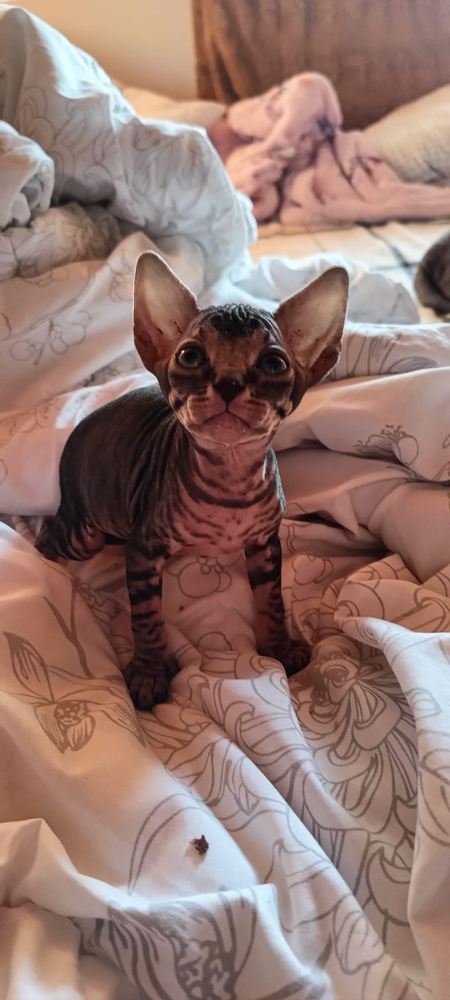
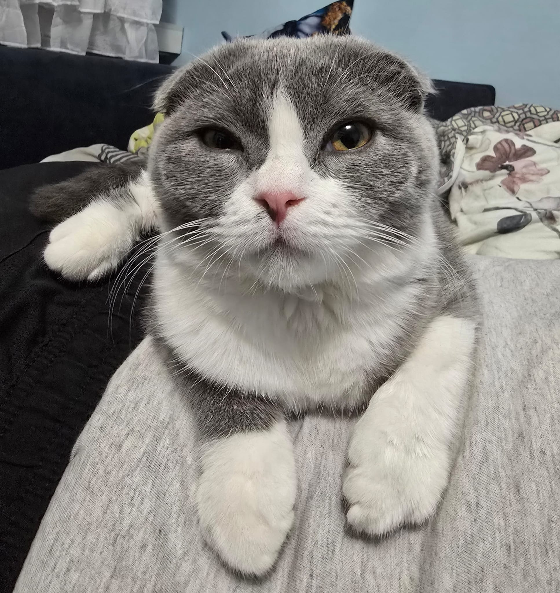

Hodowla Alikoty to miejsce, gdzie pasja do kotów spotyka się z profesjonalizmem i troską o ich zdrowie oraz dobrostan. Jesteśmy legalnie działającą hodowlą, zarejestrowaną w Urzędzie Skarbowym i Powiatowym Inspektoracie Weterynarii, a także podlegającą Stowarzyszeniu Hodowców i Ochrony Zwierząt Zoolandia (REGON: 384949502).Nasza hodowla istnieje od 16 lat, a przez ten czas zdobyliśmy bogate doświadczenie w hodowli rasowych kotów. W trosce o ich zdrowie wszystkie nasze koty są regularnie badane w Śląskim Laboratorium Analitycznym pod kątem FeLV, FIV, FIP i HCM.


Hodowane przez nas rasy to:
Brytyjski
Szkocki Fold
Szkocki Straight
Maine Coon
Sfinks Kanadyjski
Sfinks Elf
Bengalski
Devon Rex
Opiekę weterynaryjną nad hodowlą sprawuje lek. wet. Krzysztof Fecko Fedorowicz, a wszystkie kwestie formalne i prawne pozostają pod nadzorem kancelarii prawnej.
Z każdym kupującym podpisujemy umowę cywilnoprawną, co gwarantuje bezpieczeństwo zarówno dla nowego właściciela, jak i dla naszych kotów.
Jeśli szukasz zdrowego, zadbanego i dobrze zsocjalizowanego kociaka, Alikoty to hodowla, której możesz zaufać.